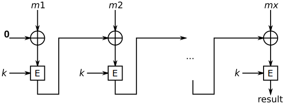

MAC
Códigos de autenticación de mensaje
Message Authentication Code

“Curso de Introducción a la Criptografía” by Jordi Íñigo Griera is licensed under a
Creative Commons Attribution 4.0 International License.
Project hosted at github.com/jig/crypto
MAC: objetivo
pruebas de integridad:
impiden que un atacante pueda modificar el mensaje
sin que el receptor lo detecte
esta funcionalidad es ortogonal con el cifrado:
cifrado y MAC se utilizan combinadas para obtener
confidencialidad y integridad
Nota sobre el cifrado: un atacante puede modificar el mensaje, aunque no lo pueda
leer
(incluso hay algoritmos que le permiten realizar operaciones:
e.g. $\oplus$ en cifrado de flujo)
MAC: casos de uso
- en una transmisión, queremos validar que lo que nos envían no ha sido modificado por un atacante
(hace falta acordar una clave $k$ previamente) - en una sistema de ficheros, queremos saber que los ficheros que hemos guardardado no han sido
alterados por un atacante, virus, etc. cuando volvamos a leerlos
(hemos de recordar la clave $k$)
MAC: funcionamiento
nos hará falta una clave secreta que aplicaremos al mensaje con la función $\text{MAC}$:
$t = \text{MAC}(k, m)$
MAC: primera implementación
podemos utilizar directamente una función de cifrado de bloc, así:
$t = e(k, m)$
Nota: no podemos utilizar cifrado de flujo (directamente), ya que el cálculo de $k$ sería trivial; pero sí que podemos usar AES-128-ECB
MAC: primera implementación
$t = e(k, m)$
esta construcción tiene una limitación:
sólo podemos autenticar mensajes de la longitud del bloque
Alternativas: ECBC y HMAC
rawCBC-MAC
derivado del modo de operación CBC (Cipher Block Chaining)

(basado en Wikipedia)
pero en lugar de utilizar un $\text{IV}$, iniciaremos la cadena con $0$ (equivalent a $\text{IV}=0$)
pero rawCBC-MAC es inseguro...
ECBC-MAC
...rawCBC-MAC es inseguro ya que un atacante puede combinar mensajes buenos para generar otros aparentemente "buenos"
para evitar el problema podemos cambiar el $\text{IV}=0$ por la longitud del mensaje $\text{IV}=\ell$
ECBC-MAC
...o habitualmente lo que se hace es utilizar una segunda clave para cerrar el cálculo y impedir el
concatenado
(ECBC: Encrypted CBC)
_structure.svg)
(basat en Wikipedia)
ECBC-MAC: seguridad
ECBC-MAC es seguro mientras sea improbable encontrar una colisión
la probabilidad de colisión es cercana a $0.5$ para una cantidad de bloques generados de aproximadamente $\sqrt{|\text{bloc}|}$
e.g. en el caso de AES el bloque es de $128$ b, por tanto, no podremos usar la misma clave:
$\text{ops} \ll \sqrt{2^{128}} = 2^{64}$
(valores aceptados para una clave AES-128/192/256:
$2^{48}$ mensajes autenticados)
Otros MACs usados
Poly1305-AES: longitud $\|t\| = 128 \text{b}$
Poly1305-ChaCha20: longitud $\|t\| = 128 \text{b}$
HMAC (Hash MAC): longitud = longitud hash base